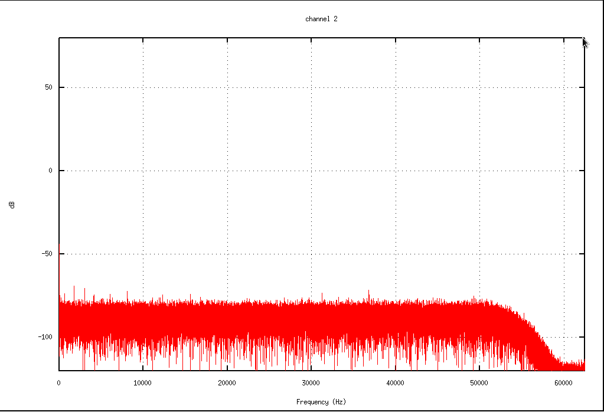

Overview
The system is designed to be deployed as a buoy or on the sea floor. It features a flexible, modular design that can record between 8 and 86 hydrophone channels.
The recorder is made up of 1 to 6 recording modules, depending on the number of channels in the hydrophone array, controlled by the system controller. Each recording module records up to 16 channels. Each channel includes a 24-bit A/D converter and supports sample rates up to 125 kHz. Each module includes data storage for up to 5 days of continuous recording at the highest sample rate.
The system was designed with low power components to keep power consumption to a minimum. Power suppply options include: Alkaline D-Cells, Rechargeable Lithium-Ion Batteries, Rechargeable Lead-Acid Batteries, or Shore Power supplied over a sub-sea cable.
Applications
- Active Source Acoustic and Seismic Studies
- Ambient Noise Monitoring
- Noise Characterization
Sample Data
Recorded at 125 kHz at the lowest gain state. Plots show spectrum of 5 second data window.
Channel 2 (ADgnd): Digital Electronics Noise Floor with A/D input grounded. RMS =9 µV
Channel 4 (Preamplifier): System Noise Floor with Input Connected to Preamplifier (Includes digital gain and preamplifier gain). RMS = 442 µV
Specifications
| Channels | 8 to 96 |
|---|---|
| Sample Rates Supported per Channel | 1953 to 125,000 Hz |
| A/D Converter | 24 Bit Delta-Sigma |
| Hydrophones | High Tech, Inc. Voltage or Current Mode |
| Gain Stage Supported |
10dB
22dB
30dB
40dB
|
| Gain Accuracy | 1% (0.1 dB) |
| Maximum Input Signal | 3.2768 Volts |
| Equivalent Noise Input | 32.768 µV @ 125 kHz |
| Anti-alias Filter |
-3dB Bandwidth
Sample Rate *0.4096
|
| Instantaneous Dynamic Range | -100 dB |
| THD | -90 dB |
| Clock Source | Internal Clock on System Controller (Optional: Time Standard, GPS) |
| Solid State Disk Drive | Up to 2 TB per 8 Channels |
|---|---|
| Commmunications |
Gigabit Ethernet
RS-232 (Optional RF Modem or Stallite Modem)
|
| Data Rates Supported | 4.5 MB/s per 8 Channel Module |
| Channels per Recording Module | 8 or 16 (Supports up to 6 Modules) |
| Data Resolution | 24 Bits (LSB = 0.488 µV) |
| CPU Processor | 1.6 GHz Intel Atom |
| Battery or Cabled to Shore Source | 24 VDC |
|---|---|
| Battery Types Supported |
Alkaline
Rechargeable Lead-Acid
Rechargeable Lithium
|
| Shore Source Requirements | 24 VDC @ 10 A (Maximum for using 96 Channels) |
| Power Consumption | 1.8 to 3.8 Watts per Channel Depending on Configuration |
| Operating Temperature |
Standard: 0˚C to 70˚C
Extended: -40˚C to 80˚C
|
|---|---|
| Storage Temperature |
Standard: -45˚C to 80˚C
Extended: -50˚C to 85˚C
|
| Size |
Electronics Package: 60" (152cm) Long x 12" (30.5cm) Diameter
Battery Package: 30" (84cm) Long x 16" (41cm) Diameter
|
| Weight |
Electronics Package: 107lbs (49kg)
Battery Package: 190lbs (86kg)
|
| Maximum Operating Depth | 6,000m (Recorder with Hydrophones) |